Qwen 团队，Alibaba Group
本报告介绍 Qwen2.5-1M，这是将上下文长度扩展至 100 万 token 的一系列模型。相较于此前的 128K 版本，Qwen2.5-1M 系列通过长上下文预训练和后训练，显著增强了长上下文能力。我们采用长数据合成、渐进式预训练和多阶段 SFT 等关键技术，有效提升长上下文性能，同时降低训练成本。
为了推动更广泛的用户群体使用长上下文模型，我们介绍并开源了我们的推理框架。该框架包含一种长度外推方法，无需额外训练即可将模型上下文长度扩展至少四倍，甚至更多。为降低推理成本，我们针对部署场景实现了稀疏 attention 方法及 chunked prefill 优化，并通过稀疏性细化方法提升精度。此外，我们详细介绍了推理引擎中的优化，包括 kernel 优化、PP 和调度优化，这些优化显著提升了整体推理性能。借助我们的推理框架，Qwen2.5-1M 模型在 100 万 token 上下文场景中实现了显著的 3 至 7 倍 prefill 加速。该框架为使用开源模型开发需要长上下文处理的应用提供了高效且强大的解决方案。
Qwen2.5-1M 系列目前包含开源模型 Qwen2.5-7B-Instruct-1M 和 Qwen2.5-14B-Instruct-1M，以及通过 API 访问的模型 Qwen2.5-Turbo。评估表明，Qwen2.5-1M 模型在长上下文任务上得到大幅提升，同时没有损害短上下文场景中的性能。具体而言，Qwen2.5-14B-Instruct-1M 模型在长上下文任务中显著优于 GPT-4o-mini，并支持长达其八倍的上下文。
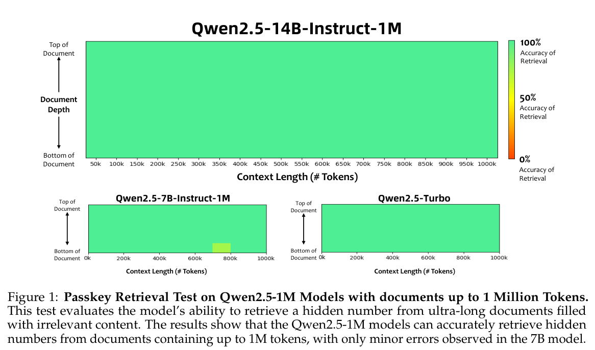
* 作者按姓氏的字母顺序排列。
LLM 展示了理解、生成和与人类语言交互的卓越能力，彻底改变了自然语言处理（Brown et al., 2020; OpenAI, 2023; 2024; Gemini Team, 2024; Anthropic, 2023a;b; 2024; Bai et al., 2023; Yang et al., 2024a; 2025; Touvron et al., 2023a;b; Dubey et al., 2024; Jiang et al., 2023a; 2024a）。然而，有限的上下文长度限制了它们一次能够处理的文本量，使其能力局限于较简单的单一任务，无法应对需要处理或生成大量信息的复杂现实场景。例如，LLM 难以完成依赖代码仓库级上下文的代码生成与调试，也难以基于大量文档开展深入研究。
为解决这一问题，扩大 LLM 的上下文窗口已成为重要趋势。GPT 系列（Brown et al., 2020; OpenAI, 2023; 2024）、LLama 系列（Touvron et al., 2023a;b; Dubey et al., 2024）以及我们的 Qwen 系列（Bai et al., 2023; Yang et al., 2024a; Qwen Team, 2024a; Hui et al., 2024; Qwen Team, 2024c; Yang et al., 2024b）等模型，已从最初的 4k 或 8k token 上下文窗口迅速扩展到目前的 128k token。也有将 LLM 上下文长度扩展至 1M token 甚至更长的探索，例如 Gemini（Gemini Team, 2024）、GLM-9B-Chat-1M（Zeng et al., 2024）以及 Gradient AI 的 Llama-3-1M 模型（Pekelis et al., 2024）。这种增长催生了更复杂的应用，使用户和开发者能够利用模型增强后的上下文能力开展创新研发。
本报告将介绍 Qwen2.5 的 1M 上下文长度版本，即 Qwen2.5-1M 系列。在开源权重方面，我们发布了两个指令微调模型：Qwen2.5-7B-Instruct-1M 和 Qwen2.5-14B-Instruct-1M。与 128K 版本相比，这些模型的长上下文能力显著增强。此外，我们提供了一个基于 MoE、可通过 API 访问的模型 Qwen2.5-Turbo，其性能可与 GPT-4o-mini 相媲美，同时拥有更长的上下文、更强的能力和更具竞争力的价格。除模型本身外，我们还开源了针对长上下文处理优化的推理框架，使开发者能够以更低的成本部署 Qwen2.5-1M 模型。
本报告概述 Qwen2.5-1M 背后的关键方法，重点关注两个方面：
Qwen2.5-1M 系列基于 Qwen2.5 模型（Yang et al., 2025）开发，支持最长 1M token 的上下文。目前包含两个开源稠密模型 Qwen2.5-7B-1M、Qwen2.5-14B-1M，以及用于 API 服务的 MoE 模型 Qwen2.5-Turbo。
Qwen2.5-1M 模型保留了与 Qwen2.5 相同的基于 Transformer 的架构，确保推理兼容性。具体而言，架构采用分组查询 attention（GQA, Ainslie et al., 2023）以高效利用 KV cache，采用 SwiGLU 激活函数（Dauphin et al., 2017）进行非线性变换，采用旋转位置 embeddings（RoPE, Su et al., 2024）编码位置信息，在 attention 机制中使用 QKV bias（Su, 2023），并通过带前置归一化的 RMSNorm（Jiang et al., 2023b）确保训练稳定性。
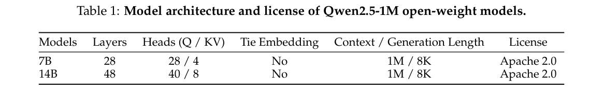
长上下文预训练的计算密集度很高，成本也可能很高。为提升训练效率、降低成本，我们在 Qwen2.5-1M 模型的预训练过程中重点优化数据效率并细化训练策略。具体而言，我们的改进来自以下方面：
自然数据与合成数据。在预训练阶段，我们汇集了规模庞大、类型多样的自然长文本语料，确保 Qwen2.5-1M 模型接触广泛的语言模式和上下文。该语料涵盖多个领域，包括但不限于 Common Crawl、arXiv、书籍和代码仓库。
尽管内容丰富，自然语料往往表现出较弱的长距离关联，使模型难以有效学习相距较远的 token 之间的联系。这一限制源于自然文本通常更重视局部连贯性而非全局结构，模型无需依赖长距离关系便能轻松预测下一个 token。
为应对这些挑战，我们使用旨在增强模型理解和生成长距离依赖能力的合成数据扩充自然语料。合成数据生成过程包含若干复杂任务，以提升模型对序列关系和上下文的理解：
通过将这些合成数据任务融入预训练，我们显著提升了模型捕获长距离信息的能力。这种方法不仅提升数据效率，还通过加快学习过程、减少达到高性能所需的迭代次数，降低整体计算成本。
训练策略。长上下文训练需要大量 GPU 显存，因此对训练成本和时间均构成严峻挑战。为提升训练效率，Qwen2.5-1M 模型采用了包含五个阶段的渐进式上下文长度扩展策略。
前两个阶段与其他 Qwen2.5 模型类似，我们直接使用 Qwen2.5 Base 模型的中间版本开展后续长上下文训练。具体而言，模型最初在 4096 token 的上下文长度上训练，然后转移至 32768 token 的上下文长度。在这一过程中，我们采用自适应基频（ABF）技术（Xiong et al., 2023），将 RoPE（Su et al., 2024）的基频从 10,000 调整至 1,000,000。
随后三个阶段将上下文长度扩展为 65,536、131,072 和 262,144 token，对应的 RoPE 基频分别设为 1,000,000、5,000,000 和 10,000,000。在这些阶段，训练数据经过筛选，包含 75% 当前最大长度的序列和 25% 较短序列。这种方法确保模型能有效适应更长的上下文，同时保留处理不同长度序列并在其上泛化的能力。
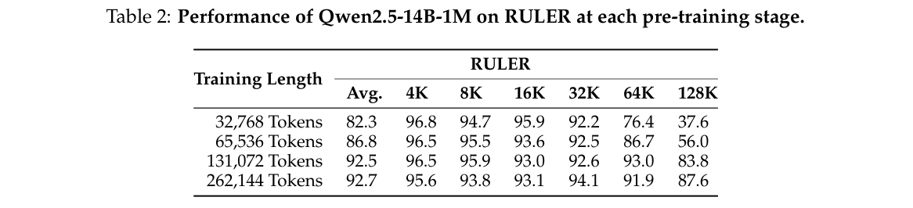
为监控渐进式训练中的性能变化，我们在每个训练阶段结束时，在 RULER（Hsieh et al., 2024）基准上评估 Qwen2.5-14B-1M。如表 2 所示，使用逐渐增长的序列训练，持续增强了模型对相应长度序列的理解能力。值得注意的是，即便最后一个预训练阶段使用 262,144 token 的序列，也显著提升了模型在 128K 样本上的性能。这一发现与此前研究（An et al., 2024b）一致，表明模型可从更长序列的训练中显著获益，从而在相对较短的任务中充分发挥潜力。
后训练旨在有效增强模型在长上下文任务中的性能，同时确保短任务性能不下降。我们重点介绍构建 Qwen2.5-1M 模型时在后训练阶段开展的以下工作：
合成长指令数据。在长上下文任务中，人工标注可能昂贵且不可靠。为解决这一问题，我们的训练数据中相当大的一部分是合成长上下文问答对。具体而言，受 Dubey et al.（2024）；Bai et al.（2024）启发，我们从预训练语料中选择长文档，并提示 Qwen2.5 基于从每份文档随机抽取的片段生成问题。这些问题涵盖摘要、信息检索、多跳问答、推理、编码等多种任务。
随后，我们利用 Qwen-Agent 框架（Qwen Team, 2024b）基于完整文档生成高质量回答。该框架采用 RAG、逐块阅读、逐步推理等先进技术，能够全面地将文档整体内容整合到回答中。最后，我们将完整文档、模型生成的问题，以及基于 agent 生成的回答组合成合成训练数据。
两阶段 SFT。为提升模型在长上下文任务中的性能，同时不损害较短任务的性能，我们采用两阶段训练方案。第一阶段与 Qwen2.5 模型类似，只使用每条最长 32,768 token 的短指令数据训练模型，并保持相同的训练步数。这一阶段确保模型保留处理短任务的熟练程度。第二阶段引入由短序列和长序列组成的混合数据集，长度范围从最长 32,768 token 到最长 262,144 token。我们仔细平衡短数据与长数据的比例，以防模型遗忘第一阶段获得的技能。
强化学习。我们采用类似 DPO（Rafailov et al.，2023）的离线强化学习，增强模型与人类偏好的对齐。具体而言，我们使用其他 Qwen2.5 模型离线 RL 阶段的训练数据对，它们完全由最长 8,192 token 的短样本组成。我们发现，使用这些短样本训练已足以显著改善模型与人类偏好的对齐，并有效泛化到长上下文任务。为支持这一结论，我们使用 longbench-chat 基准评估了 RL 前后的模型。如表 3 所示，RL 阶段使所有模型均得到显著提升，展示了 RL 从短上下文任务向长上下文任务的有效泛化。
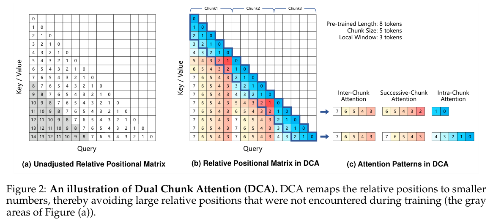
当 LLM 处理长上下文任务时，推理与部署面临重大挑战。关键问题包括在有限 GPU 显存的约束下部署处理更长序列的模型、减少计算以加速处理，同时在优化过程中保持准确率。本节将介绍我们应对这些挑战的方法。
首先，我们介绍长度外推方法，使模型在推理时支持达到训练长度四倍甚至更长的上下文。接着，我们介绍一种稀疏 attention 机制，在 prefill 阶段实现超过四倍的加速。最后，我们深入介绍 kernel 和系统层面的优化，它们进一步提升整体推理性能。
本节详述的推理与部署解决方案已经开源，并集成进 vLLM（Kwon et al., 2023）。它使用户能够在自己的设备上部署 Qwen-2.5 模型，利用我们的先进长度外推方法和加速优化获得更好的性能。
长度外推是一种推理技术，旨在提升模型处理超出训练上下文长度的长输入时的性能。我们采用以下两种方法实现长度外推。
Dual Chunk Attention（DCA, An et al., 2024a）。基于 RoPE 的现代 LLM 在处理比训练长度更长的序列时会出现性能下降，主要是因为在计算 attention 权重时，query 和 key 之间出现未经训练的大相对位置距离。
DCA 方法将整个序列划分为多个块，并将相对位置重新映射为较小数值，从而解决这一问题，确保任意两个 token 之间的距离不超过预训练长度。图 2(b) 展示了重新映射后的相对位置矩阵示例。
DCA 采用三种不同的 attention 模式，高效管理不同距离的 token 交互：
（接第 5 页 Successive-Chunk Attention 条目）处于局部窗口大小以内，则保留原始相对位置。否则，它采用 Inter-Chunk Attention 中的方法处理较长距离。
通过整合这些模式，DCA 增强了模型处理达到训练长度四倍甚至更长上下文的能力。此外，DCA 可以与 flash attention 无缝集成，从而在生产环境中高效实现。
YaRN 中的 attention 缩放（Peng et al., 2023）。在处理很长的序列时，LLM 中的 attention 机制可能分心，导致对关键信息的关注减弱。Peng et al.（2023）表明，在 attention logits 中引入温度参数 \(t\)，能够以简单而有效的方式显著提升模型性能。具体而言，attention 权重的计算修改为：
\(q\) 和 \(k\) 分别代表 query 与 key 向量。缩放因子 \(s\) 为推理长度与训练长度之比，\(D\) 表示每个 attention head 的维度。
本报告的实验始终将 YaRN 中的 attention 缩放与 DCA 一起使用。注意，这两种长度外推方法在处理短序列时不会改变模型行为，因此确保较短任务的性能不受影响。
长度外推的效果。为展示长度外推方法的有效性，我们在 100 万 token 的上下文长度下，评估 Qwen2.5-1M 模型及其 128k 对应版本在使用和不使用 DCA 时的性能。我们从 RULER（Hsieh et al., 2024）中选择三个任务进行评估：Passkey Retrieval、多 query 的 NIAH（Needle in a Haystack），以及多 value 的 NIAH。
结果如图 3 所示。首先，我们发现 DCA 显著增强了所有指令模型处理长上下文任务的性能，尤其是在上下文长度远超训练长度时。其次，在相对简单的 Passkey Retrieval 任务上，即使 Qwen2.5-7B-Instruct 和 Qwen2.5-14B-Instruct 模型仅使用最长 32K token 的序列训练，DCA 仍使二者在最长 100 万 token 的序列上达到超过 80% 的准确率。这突出表明 DCA 是一种稳健有效的长度外推方案。最后，将 Qwen2.5-1M 模型与其 128k 版本进行比较，我们观察到，使用更长序列（最长 256k token）训练，可显著提升模型向更长上下文外推性能的能力。
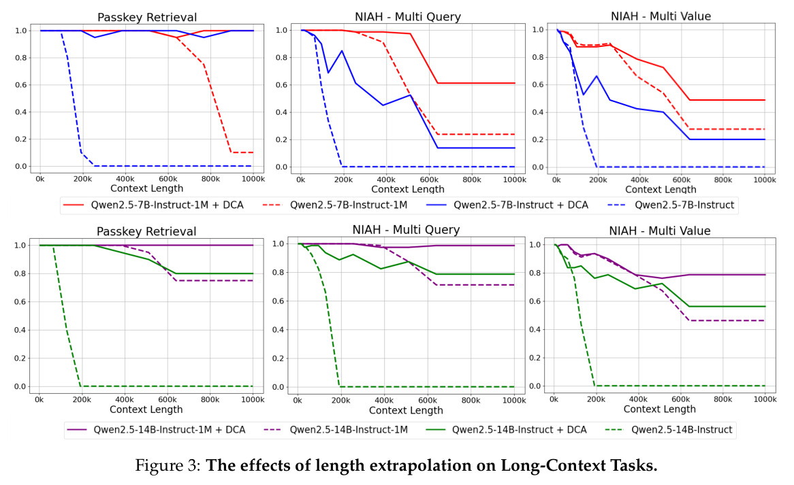
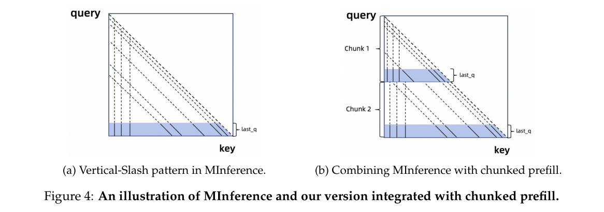
对于长上下文 LLM，推理速度对用户体验至关重要。传统 attention 机制的计算复杂度随输入序列长度呈二次方增长。当输入长度达到 100 万 token 时，attention 机制所耗时间可占整个前向传播时间的 90% 以上。因此，引入稀疏 attention 机制是成功部署长上下文模型的必要步骤。
具体而言，我们基于 MInference（Jiang et al., 2024b）实现了一种稀疏 attention 机制，以加速 prefill 阶段。在此基础上，我们通过集成 chunked prefill 进一步优化显存使用，将这些改进与长度外推技术结合，并引入稀疏性细化方法，以应对长序列中潜在的准确率下降。
MInference（Jiang et al., 2024b）。LLM 的 attention 计算在长上下文输入下表现出稀疏性。Jiang et al.（2024b）成功识别并仅使用关键 token 进行 attention 计算，取得了与完整 attention 机制几乎相同的结果。这些关键 token 在所有样本中呈现出独特模式，在 attention 图中表现为竖线和斜线。这一模式称为“Vertical-Slash”模式，如图 4(a) 所示。
为利用这种稀疏性，MInference 首先进行离线搜索，确定最优稀疏化配置。这种配置指定每个 attention head 应采用多少条竖线和斜线。在推理时，MInference 首先计算最后一些 query token（即 last q）与所有 key token 之间的 attention。基于局部 attention 结果，它按预先确定的配置，依据“Vertical-Slash”模式动态选择关键 token，最后只在这些选中的关键 token 上计算 attention。这种方法将计算和内存访问成本显著降低约 10 倍，同时仅引入极小的准确率损失。
与 chunked prefill 集成。在 MInference 中，整个序列同时编码，使激活值的显存消耗随输入长度线性增长。例如，当输入达到 100 万 token 时，Qwen2.5-7B 单个 MLP 层的激活值显存消耗可飙升至 71GB，显著超过模型权重和 KV cache 的显存占用。
为应对这一挑战，可在推理时采用 chunked prefill 降低显存消耗。采用 32,768 token 的块长度，chunked prefill 可以将激活值显存占用减少 96.7%。此外，在处理多个请求时，chunked prefill 有助于避免 decoding 因漫长的 prefill 操作而受阻。
为将 chunked prefill 集成到 MInference，我们提出了一种为每个块选择关键 token 的策略，如图 4(b) 所示。输入序列划分为多个块，由模型按顺序处理。在 attention 层中，我们不考虑尚不可访问的整个输入序列末尾 token，而是利用每个块内最后 64 个 token 识别关键 token。这种方法在 token 选择过程中为每个块引入各自不同的竖线和斜线，在我们的初步实验中未造成显著准确率损失。
通过将 chunked prefill 与 MInference 集成，我们的方法显著增加了有限显存资源下所支持的最大序列长度。
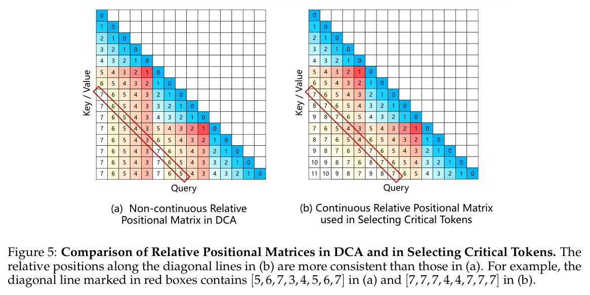
与 DCA 集成。MInference 的实现可以无缝集成 DCA。然而，我们在某些涉及长度外推的情形中观察到性能下降。
我们推测，DCA 中相对位置的不连续性可能破坏“slash”模式，导致关键 token 选择准确率下降。为解决这一问题，我们提出，在为 Successive-Chunk 和 Inter-Chunk attention 选择关键 token 时恢复连续相对位置，确保斜线上相对位置尽可能一致，如图 5 所示。需要注意，连续相对位置仅在关键 token 选择阶段引入，最终 attention 权重计算仍使用 DCA 中不连续的位置 embeddings。
1M 序列上的稀疏性细化。部署之前，MInference 需要离线搜索以确定每个 attention head 的最优稀疏化配置。由于完整 attention 矩阵的计算需求随序列长度呈二次方增长，这一搜索过程在短序列上进行。考虑到所用设备的显存限制，搜索中的序列通常保持在 32k token 以下，导致在 1M token 等更长序列上的性能不够理想。
为解决这一限制，我们开发了一种专门针对最长 1M token 序列细化稀疏化配置的方法。该方法利用 Flash Attention（Dao et al., 2022）的高效实现获得 softmax lse，其定义为：
上述 softmax lse 表示 query \(q\) 的未归一化 attention 权重之和。类似地，我们将稀疏 attention 的 softmax lse 定义为：
它表示 query \(q_i\) 仅在关键 token 上的未归一化 attention 权重之和。因此，我们可以计算 attention 权重的召回率：
该值位于 0 和 1 之间，表示稀疏 attention 计算对关键 token 的捕获程度。
使用这一 attention 召回率指标，我们在由 1M token 序列构成的校准集上细化稀疏化配置。细化过程详见算法 1。
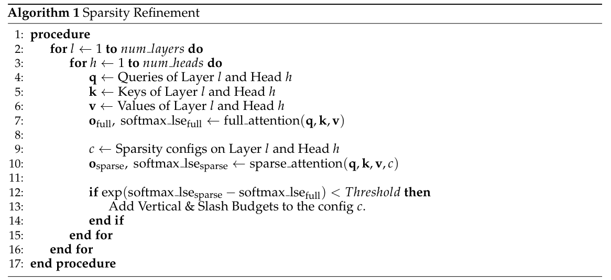
稀疏 attention 对准确率的影响。为展示将 DCA 与稀疏性细化相结合的方法的必要性，我们在最长 100 万 token 的上下文长度下，通过 Needle in a Haystack Test（Kamradt, 2023）评估 Qwen2.5-7B-Instruct-1M。我们选择该模型，是因为较小模型对稀疏 attention 导致的信息损失容忍度更低，从而更能突出我们改进的价值。
如图 6 所示，采用完整 attention 的 Qwen2.5-7B-Instruct-1M 即使在 100 万 token 上下文中，也能成功检索大多数 needle。然而，采用原始 MInference 方法会导致性能大幅下降。对于超过 400k token 的上下文长度，模型检索准确率可能降至 60% 或更低。
引入连续相对位置来选择关键 token，并细化稀疏化配置后，如图 6(c) 所示，模型恢复了大部分性能，同时在 prefill 阶段保持约 4 倍加速。
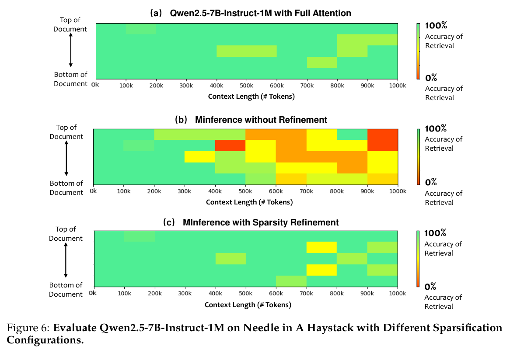
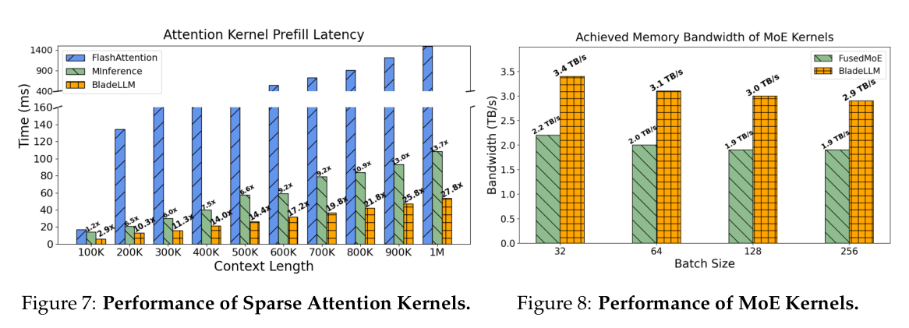
除算法进展外，优化推理引擎对于使 LLM 有效处理长序列也至关重要。Qwen2.5-1M 模型的 API 服务由 Alibaba PAI Engine 团队开发的高性能推理引擎 BladeLLM 支持。BladeLLM 通过提升 kernel 性能、PP 和调度算法，专门针对长序列 prefill 与 decoding 进行了优化。为了帮助开源社区高效部署扩展上下文长度的 Qwen 模型，其中若干优化已经开源，并将集成到 vLLM（Kwon et al., 2023）中。
稀疏 attention kernel 优化。随着上下文长度（\(L_c\)）增加，attention 的计算复杂度（\(O(L_c^2)\)）和内存访问量（\(O(L_c)\)）显著增长。为应对这一问题，业界探索了通过稀疏性提升效率的优化策略，例如 MInference（Jiang et al., 2024b）的 Vertical-Slash 方法。然而，我们观察到稀疏化后的 attention kernel 效率仍较低，在端到端应用中依然占据总推理时间的显著比例。因此，对稀疏 attention kernel 进行极致优化，对于充分释放稀疏化潜力更为关键。
为减少稀疏内存访问的开销，我们在从全局内存加载稀疏 KV 对时实现了多阶段 PP，并进行了深入的指令级优化。优化后的稀疏 attention kernel 旨在利用各种 GPU 架构的能力，包括 NVIDIA 的 Ampere 和 Hopper 系列、AMD 的 MI300 系列及其他硬件平台。
实验表明，BladeLLM 中优化后的 kernel 在多个硬件平台上取得了极高的计算效率，峰值 FLOPs 利用率达到 90%。如图 7 所示，在 A100 GPU 上的 100 万 token 上下文下，相比 FlashAttention，MInference 实现了 13.7 倍加速，而 BladeLLM 在相同稀疏性配置下实现了 27.8 倍加速。
MoE kernel 优化。MoE 模型以参数稀疏激活和出色准确率为特点，特别适合大规模部署。在优化我们的 MoE 模型 Qwen2.5-Turbo 性能时，我们发现 decoding 性能受到内存访问速度的显著影响。具体而言，在 decoding 阶段处理 batch size 为 32 或更大的请求时，每次 decoding 迭代对大模型参数的访问成为 MoE 层整体效率的关键瓶颈。因此，提升 MoE kernel 内部的内存访问效率，对于实现峰值 decoding 性能至关重要。
BladeLLM 通过多种优化技术提升 MoE kernel 效率，包括专门针对内存瓶颈场景改进 Tensor Core 利用率，以及细粒度 warp 专门化。在 H20 GPU 上，这些优化实现了 3.4 TB/s 的峰值内存访问效率，相较 vLLM 中的 FusedMoE kernel 提升 55%。不同 batch size 下的性能结果如图 8 所示。
PP 是一种将模型划分为多个片段、允许模型不同部分并发处理的技术。与 TP 相比，这种方法显著减少通信量，并且由于操作更加密集，其 kernel 执行效率得到提升。在近期业界实践中，分块 PP（Chunked Pipeline Parallelism）被用于加速 prefill 阶段。然而，在超长上下文场景中，我们发现一个问题：不同块之间的历史长度（即过去 KV cache 的长度）变化，导致 attention 计算时间存在显著差异。这种差异造成大量流水线气泡，如图 9(a) 所示。
BladeLLM 对长上下文 prefill 采用动态分块 PP（DCPP），根据 attention kernel 的计算复杂度动态调整块大小，确保每个块的执行时间尽可能相等，从而最小化流水线气泡，如图 9(b) 所示。
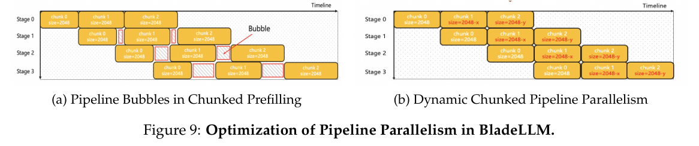
典型的 LLM 推理引擎可划分为以下组件：
在早期主流推理引擎中，Scheduler、Model Runner 和 Decoder 以串行方式运行，如图 10(a) 所示。在这一设置中，Scheduler 和 Decoder 等非 GPU 操作占据了 decoding 时间的显著部分，导致 GPU 利用率降低。
为解决这些问题，BladeLLM 实现了一个名为 Totally Asynchronous Generator（TAG）的完全异步 LLM 推理架构，如图 10(b) 所示。具体而言，三个组件分别由三个独立进程处理，彼此无需同步。
此外，BladeLLM 在各组件之间采用共享内存，进一步减少进程间通信开销。通过这些方法，BladeLLM 显著减少了推理引擎非 GPU 阶段的开销，大幅提高 decoding 效率。
为全面评估 Qwen2.5-1M 系列模型的性能，我们首先评估其在长上下文任务中的能力，突出展示专门的长上下文优化所带来的显著提升。接着，我们考察短上下文任务的性能，并与 128k 版本的结果比较。最后，我们展示模型的推理速度。
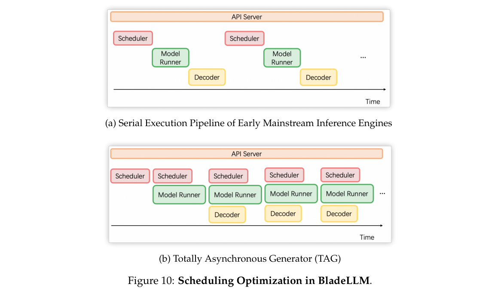
我们首先在 100 万 token 上下文长度的 Passkey Retrieval 任务中评估 Qwen2.5-1M 系列模型。如图 1 所示，Qwen2.5-14B-Instruct-1M 和 Qwen2.5-Turbo 均达到完美准确率，成功识别最长 100 万 token 上下文中的所有隐藏数字。较小的 Qwen2.5-7B-Instruct-1M 模型也表现出色，仅出现少量轻微错误。这些结果凸显 Qwen2.5-1M 模型在处理超长 100 万 token 上下文时稳健的检索能力。
对于更高级的任务，我们使用三个基准评估长上下文能力：
作为基线，我们选择 GLM-9B-Chat-1M（Zeng et al., 2024）、Llama-3-8B-Instruct-Gradient-1048k（Pekelis et al., 2024）、Llama-3.1-70B-Instruct、GPT-4o-mini 和 GPT-4o。
三个基准的结果详见表 4 和表 5。显然，Qwen2.5-1M 系列模型在大多数长上下文任务中显著优于对应的 128k 版本，尤其是长度超过 64k 的序列。在 RULER 数据集上，Qwen2.5-1M 系列所有模型甚至超过 GPT-4，凸显其在长上下文检索任务中的卓越能力。
值得注意的是，Qwen2.5-14B-Instruct-1M 模型在 128k 序列上达到 92.2 的准确率，这是 Qwen2.5 系列中首次有模型突破 90 分门槛。此外，它在多个数据集上持续优于 GPT-4o-mini，为长上下文任务提供了强大的开源替代方案。
在长上下文基准中，Qwen2.5-Turbo 的性能介于 Qwen2.5-7B-Instruct-1M 和 Qwen2.5-14B-Instruct-1M 之间。它具有更快的推理速度和更低的成本，因而是成本效益更高、更高效的选择。
尽管 Qwen2.5-72B-Instruct 的训练序列仅限于 32k token，但在（接第 13 页）
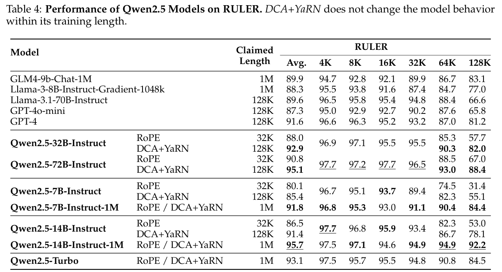
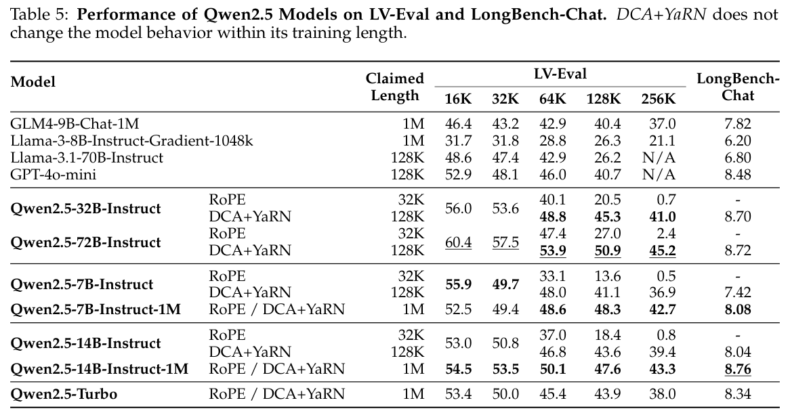
（接第 12 页）使用我们的长度外推方法 DCA+YaRN 增强后，它在 LV-Eval 基准的所有序列长度上都持续优于 Qwen2.5-14B-Instruct-1M 模型。这一结果凸显了长度外推技术的巨大价值，也突出了更大模型处理复杂长上下文任务的内在优势。
除长上下文任务的性能提升外，我们还在短上下文任务上，对 Qwen2.5-1M 与对应的 128k 版本进行了全面比较。
我们选择了针对自然语言理解、编码、数学和推理的广泛使用的基准。在通用评估中，我们采用 MMLU-Pro（Wang et al., 2024）、MMLU-redux（Gema et al., 2024）和 LiveBench 0831（White et al., 2024）。在科学和数学方面，我们在 GPQA（Rein et al., 2023）、GSM8K（Cobbe et al., 2021）和 MATH（Hendrycks et al., 2021）上评估模型。在编码方面，我们使用 HumanEval（Chen et al., 2021）、MBPP（Austin et al., 2021）、MultiPL-E（Cassano et al., 2023）和 LiveCodeBench 2305-2409（Jain et al., 2024）评估性能。此外，我们使用 IFEval（Zhou et al., 2023）衡量指令遵循能力，报告严格的 prompt 级准确率。为进一步评估人类偏好对齐与指令（接第 14 页）
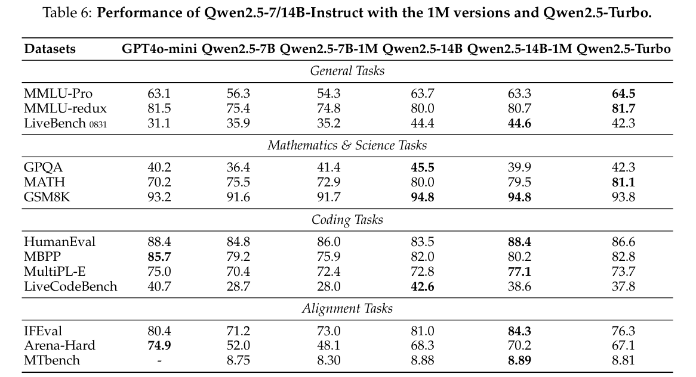
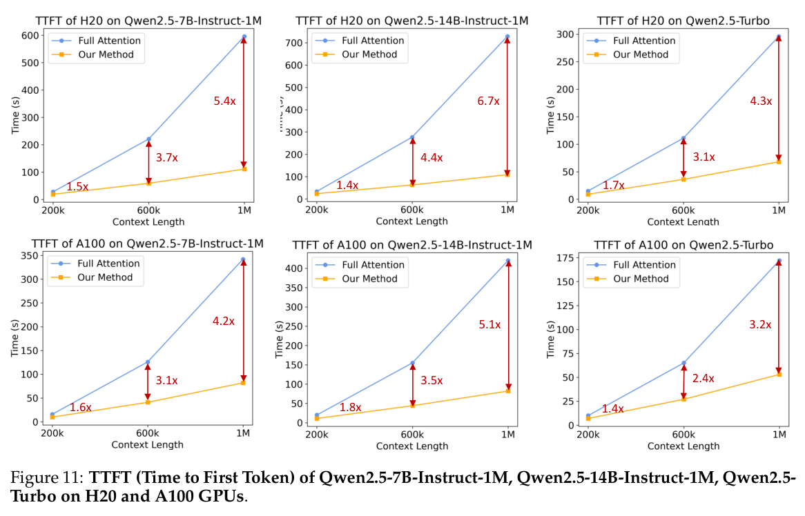
（接第 13 页）遵循性能，我们在 MT-Bench（Zheng et al., 2023）和 Arena-Hard（Li et al., 2024）上评估模型。
如表 6 所示，Qwen2.5-7B-Instruct-1M 和 Qwen2.5-14B-Instruct-1M 在短文本任务上保持了与 128k 版本相近的性能，确保加入长序列处理能力并未损害其基础能力。与 GPT-4o-mini 相比，Qwen2.5-14B-Instruct-1M 和 Qwen2.5-Turbo 在短文本任务上均达到相近性能，同时支持长达八倍的上下文长度。
为展示最终方案处理长序列时的加速效果，我们在 Nvidia H20 和 A100 GPU 上评估不同上下文长度的 TTFT。实验配置如下：
所有实验均使用 batch size 为 1。
如图 11 所示，通过稀疏 attention 和优化的推理引擎增强后，我们的方法在各种模型规模和设备上处理 1M 上下文长度时实现了 3.2 至 6.7 倍加速。例如，在 H20 GPU 上，Qwen2.5-14B-Instruct-1M 模型的推理时间从采用完整 attention 时的 12.2 分钟缩短至仅 109 秒。类似地，Qwen2.5-Turbo 模型的处理时间从 4.9 分钟缩短至仅 68 秒。这些改进显著减少了用户在长序列任务上的等待时间。
与开源 Qwen2.5-1M 模型相比，Qwen2.5-Turbo 在短任务上表现出色，在长上下文任务中也取得有竞争力的结果，同时处理时间更短、成本更低。因此，它在性能与效率之间提供了出色的平衡，具有很高的成本效益。
本技术报告介绍了 Qwen2.5-1M 系列模型，包括开源模型 Qwen2.5-7B-Instruct-1M 和 Qwen2.5-14B-Instruct-1M，以及可通过 API 访问的模型 Qwen2.5-Turbo。我们详细说明了如何通过长上下文预训练和后训练扩展 Qwen2.5 Base 模型，从而开发这些模型。我们介绍了数据合成、渐进式训练等技术，以较低成本提升训练有效性。
除训练外，高效推理与部署也是长上下文模型面临的重大挑战。我们实现了若干优化，包括无需训练的长度外推方法、稀疏 attention 机制以及推理引擎增强。这些优化大幅提升效率，并降低长序列模型的运行成本，使实际应用更可行。我们已经开源其中若干优化，并坚信这是推动该领域进步最有效的方式。
我们认识到，长上下文模型仍有巨大的提升潜力。我们重点开发在短上下文与长上下文任务中均表现出色的模型，确保其在现实长上下文场景中提供重大价值。我们将继续探索更高效的训练策略、模型架构和推理方法，使其即使在资源受限环境中也能有效部署并取得出色表现。我们相信，这些努力将使长上下文模型适用于更广泛的使用场景。
Joshua Ainslie, James Lee-Thorp, Michiel de Jong, Yury Zemlyanskiy, Federico Lebr´on, and Sumit Sanghai. GQA：从多头 checkpoint 训练广义多查询 Transformer 模型. In EMNLP, pp. 4895–4901. Association for Computational Linguistics, 2023.
Chenxin An, Fei Huang, Jun Zhang, Shansan Gong, Xipeng Qiu, Chang Zhou, and Lingpeng Kong. 大语言模型无需训练的长上下文扩展. CoRR, abs/2402.17463, 2024a.
Chenxin An, Jun Zhang, Ming Zhong, Lei Li, Shansan Gong, Yao Luo, Jingjing Xu, and Lingpeng Kong. 为什么 LLM 的有效上下文长度未达预期？, 2024b.. URL https://arxiv.org/abs/2410.18745.
Anthropic. 介绍 Claude, 2023a.. URL https://www.anthropic.com/index/introducing-claude.
Anthropic. Claude 2. Technical report, Anthropic, 2023b.. URL https://www-files.anthropic.com/production/images/Model-Card-Claude-2.pdf.
Anthropic. Claude 3 模型家族：Opus、Sonnet、Haiku. Technical report, Anthropic, AI, 2024.. URL https://www-cdn.anthropic.com/de8ba9b01c9ab7cbabf5c33b80b7bbc618857627/Model_Card_Claude_3.pdf.
Jacob Austin, Augustus Odena, Maxwell I. Nye, Maarten Bosma, Henryk Michalewski, David Dohan, Ellen Jiang, Carrie J. Cai, Michael Terry, Quoc V. Le, and Charles Sutton. 使用大语言模型进行程序合成. CoRR, abs/2108.07732, 2021.
Jinze Bai, Shuai Bai, Yunfei Chu, Zeyu Cui, Kai Dang, Xiaodong Deng, Yang Fan, Wenbin Ge, Yu Han, Fei Huang, Binyuan Hui, Luo Ji, Mei Li, Junyang Lin, Runji Lin, Dayiheng Liu, Gao Liu, Chengqiang Lu, Keming Lu, Jianxin Ma, Rui Men, Xingzhang Ren, Xuancheng Ren, Chuanqi Tan, Sinan Tan, Jianhong Tu, Peng Wang, Shijie Wang, Wei Wang, Shengguang Wu, Benfeng Xu, Jin Xu, An Yang, Hao Yang, Jian Yang, Shusheng Yang, Yang Yao, Bowen Yu, Hongyi Yuan, Zheng Yuan, Jianwei Zhang, Xingxuan Zhang, Yichang Zhang, Zhenru Zhang, Chang Zhou, Jingren Zhou, Xiaohuan Zhou, and Tianhang Zhu. Qwen 技术报告. CoRR, abs/2309.16609, 2023.
Yushi Bai, Xin Lv, Jiajie Zhang, Yuze He, Ji Qi, Lei Hou, Jie Tang, Yuxiao Dong, and Juanzi Li. LongAlign：大语言模型长上下文对齐的配方. In EMNLP (Findings), pp. 1376–1395. Association for Computational Linguistics, 2024.
Mohammad Bavarian, Heewoo Jun, Nikolas Tezak, John Schulman, Christine McLeavey, Jerry Tworek, and Mark Chen. 高效训练语言模型进行中间填充. CoRR, abs/2207.14255, 2022. doi: 10.48550/ARXIV.2207.14255.. URL https://doi.org/10.48550/arXiv.2207.14255.
Tom B. Brown, Benjamin Mann, Nick Ryder, Melanie Subbiah, Jared Kaplan, Prafulla Dhariwal, Arvind Neelakantan, Pranav Shyam, Girish Sastry, Amanda Askell, Sandhini Agarwal, Ariel Herbert-Voss, Gretchen Krueger, Tom Henighan, Rewon Child, Aditya Ramesh, Daniel M. Ziegler, Jeffrey Wu, Clemens Winter, Christopher Hesse, Mark Chen, Eric Sigler, Mateusz Litwin, Scott Gray, Benjamin Chess, Jack Clark, Christopher Berner, Sam McCandlish, Alec Radford, Ilya Sutskever, and Dario Amodei. 语言模型是少样本学习器. In NeurIPS, 2020.
Federico Cassano, John Gouwar, Daniel Nguyen, Sydney Nguyen, Luna Phipps-Costin, Donald Pinckney, Ming-Ho Yee, Yangtian Zi, Carolyn Jane Anderson, Molly Q. Feldman, Arjun Guha, Michael Greenberg, and Abhinav Jangda. MultiPL-E：用于神经代码生成基准评估的可扩展多语言方法. IEEE Trans. Software Eng., 49(7):3675–3691, 2023.
Mark Chen, Jerry Tworek, Heewoo Jun, Qiming Yuan, Henrique Pond´e de Oliveira Pinto, Jared Kaplan, Harrison Edwards, Yuri Burda, Nicholas Joseph, Greg Brockman, Alex Ray, Raul Puri, Gretchen Krueger, Michael Petrov, Heidy Khlaaf, Girish Sastry, Pamela Mishkin, Brooke Chan, Scott Gray, Nick Ryder, Mikhail Pavlov, Alethea Power, Lukasz Kaiser, Mohammad Bavarian, Clemens Winter, Philippe Tillet, Felipe Petroski Such, Dave Cummings, Matthias Plappert, Fotios Chantzis, Elizabeth Barnes, Ariel Herbert-Voss, William Hebgen Guss, Alex Nichol, Alex Paino, Nikolas Tezak, Jie Tang, Igor Babuschkin, Suchir Balaji, Shantanu Jain, William Saunders, Christopher Hesse, Andrew N. Carr, Jan Leike, Joshua Achiam, Vedant Misra, Evan Morikawa, Alec Radford, Matthew Knight, Miles Brundage, Mira Murati, Katie Mayer, Peter Welinder, Bob McGrew, Dario Amodei, Sam McCandlish, Ilya Sutskever, and Wojciech Zaremba. 评估在代码上训练的大语言模型. CoRR, abs/2107.03374, 2021.
Karl Cobbe, Vineet Kosaraju, Mohammad Bavarian, Mark Chen, Heewoo Jun, Lukasz Kaiser, Matthias Plappert, Jerry Tworek, Jacob Hilton, Reiichiro Nakano, Christopher Hesse, and John Schulman. 训练验证器以解决数学应用题. CoRR, abs/2110.14168, 2021.
Tri Dao, Daniel Y. Fu, Stefano Ermon, Atri Rudra, and Christopher R´e. FlashAttention：具有 IO 感知能力的快速、内存高效的精确 attention. In NeurIPS, 2022.. URL http://papers.nips.cc/paper_files/paper/2022/hash/67d57c32e20fd0a7a302cb81d36e40d5-Abstract-Conference.html.
Yann N. Dauphin, Angela Fan, Michael Auli, and David Grangier. 使用门控卷积网络进行语言建模. In ICML, volume 70 of Proceedings of Machine Learning Research, pp. 933–941. PMLR, 2017.
Abhimanyu Dubey, Abhinav Jauhri, Abhinav Pandey, Abhishek Kadian, Ahmad Al-Dahle, Aiesha Letman, Akhil Mathur, Alan Schelten, Amy Yang, Angela Fan, Anirudh Goyal, Anthony Hartshorn, Aobo Yang, Archi Mitra, Archie Sravankumar, Artem Korenev, Arthur Hinsvark, Arun Rao, Aston Zhang, Aur´elien Rodriguez, Austen Gregerson, Ava Spataru, Baptiste Rozi`ere, Bethany Biron, Binh Tang, Bobbie Chern, Charlotte Caucheteux, Chaya Nayak, Chloe Bi, Chris Marra, Chris McConnell, Christian Keller, Christophe Touret, Chunyang Wu, Corinne Wong, Cristian Canton Ferrer, Cyrus Nikolaidis, Damien Allonsius, Daniel Song, Danielle Pintz, Danny Livshits, David Esiobu, Dhruv Choudhary, Dhruv Mahajan, Diego Garcia-Olano, Diego Perino, Dieuwke Hupkes, Egor Lakomkin, Ehab AlBadawy, Elina Lobanova, Emily Dinan, Eric Michael Smith, Filip Radenovic, Frank Zhang, Gabriel Synnaeve, Gabrielle Lee, Georgia Lewis Anderson, Graeme Nail, Gr´egoire Mialon, Guan Pang, Guillem Cucurell, Hailey Nguyen, Hannah Korevaar, Hu Xu, Hugo Touvron, Iliyan Zarov,
（接第 16 页 Llama 3 参考文献作者列表）
Imanol Arrieta Ibarra, Isabel M. Kloumann, Ishan Misra, Ivan Evtimov, Jade Copet, Jaewon Lee, Jan Geffert, Jana Vranes, Jason Park, Jay Mahadeokar, Jeet Shah, Jelmer van der Linde, Jennifer Billock, Jenny Hong, Jenya Lee, Jeremy Fu, Jianfeng Chi, Jianyu Huang, Jiawen Liu, Jie Wang, Jiecao Yu, Joanna Bitton, Joe Spisak, Jongsoo Park, Joseph Rocca, Joshua Johnstun, Joshua Saxe, Junteng Jia, Kalyan Vasuden Alwala, Kartikeya Upasani, Kate Plawiak, Ke Li, Kenneth Heafield, Kevin Stone, and et al. Llama 3 模型群. CoRR, abs/2407.21783, 2024.
Aryo Pradipta Gema, Joshua Ong Jun Leang, Giwon Hong, Alessio Devoto, Alberto Carlo Maria Mancino, Rohit Saxena, Xuanli He, Yu Zhao, Xiaotang Du, Mohammad Reza Ghasemi Madani, et al. 我们已经完成 MMLU 了吗？ CoRR, abs/2406.04127, 2024.
Gemini Team. Gemini 1.5：解锁跨越数百万 token 上下文的多模态理解. Technical report, Google, 2024.. URL https://storage.googleapis.com/deepmind-media/gemini/gemini_v1_5_report.pdf.
Dan Hendrycks, Collin Burns, Saurav Kadavath, Akul Arora, Steven Basart, Eric Tang, Dawn Song, and Jacob Steinhardt. 使用 MATH 数据集衡量数学问题求解能力. In NeurIPS Datasets and Benchmarks, 2021.
Cheng-Ping Hsieh, Simeng Sun, Samuel Kriman, Shantanu Acharya, Dima Rekesh, Fei Jia, Yang Zhang, and Boris Ginsburg. RULER：你的长上下文语言模型的真实上下文大小是多少？ CoRR, abs/2404.06654, 2024.
Binyuan Hui, Jian Yang, Zeyu Cui, Jiaxi Yang, Dayiheng Liu, Lei Zhang, Tianyu Liu, Jiajun Zhang, Bowen Yu, Keming Lu, et al. Qwen2.5-Coder 技术报告. CoRR, abs/2409.12186, 2024.
Naman Jain, King Han, Alex Gu, Wen-Ding Li, Fanjia Yan, Tianjun Zhang, Sida Wang, Armando Solar- Lezama, Koushik Sen, and Ion Stoica. LiveCodeBench：面向代码大语言模型的全面、无污染评估. CoRR, abs/2403.07974, 2024.
Albert Q. Jiang, Alexandre Sablayrolles, Arthur Mensch, Chris Bamford, Devendra Singh Chaplot, Diego de Las Casas, Florian Bressand, Gianna Lengyel, Guillaume Lample, Lucile Saulnier, L´elio Renard Lavaud, Marie-Anne Lachaux, Pierre Stock, Teven Le Scao, Thibaut Lavril, Thomas Wang, Timoth´ee Lacroix, and William El Sayed. Mistral 7B. CoRR, abs/2310.06825, 2023a.
Albert Q. Jiang, Alexandre Sablayrolles, Antoine Roux, Arthur Mensch, Blanche Savary, Chris Bamford, Devendra Singh Chaplot, Diego de Las Casas, Emma Bou Hanna, Florian Bressand, Gianna Lengyel, Guillaume Bour, Guillaume Lample, L´elio Renard Lavaud, Lucile Saulnier, Marie-Anne Lachaux, Pierre Stock, Sandeep Subramanian, Sophia Yang, Szymon Antoniak, Teven Le Scao, Th´eophile Gervet, Thibaut Lavril, Thomas Wang, Timoth´ee Lacroix, and William El Sayed. Mixtral 专家混合模型. CoRR, abs/2401.04088, 2024a.
Huiqiang Jiang, Yucheng Li, Chengruidong Zhang, Qianhui Wu, Xufang Luo, Surin Ahn, Zhenhua Han, Amir H Abdi, Dongsheng Li, Chin-Yew Lin, Yuqing Yang, and Lili Qiu. MInference 1.0：通过动态稀疏 attention 加速长上下文 LLM 的 prefill. arXiv preprint arXiv:2407.02490, 2024b.
Zixuan Jiang, Jiaqi Gu, Hanqing Zhu, and David Z. Pan. Pre-RMSNorm 和 Pre-CRMSNorm Transformer：等价且高效的 pre-LN Transformer. CoRR, abs/2305.14858, 2023b.
Gregory Kamradt. 大海捞针——对 LLM 进行压力测试, 2023.. URL https://github.com/gkamradt/LLMTest_NeedleInAHaystack.
Woosuk Kwon, Zhuohan Li, Siyuan Zhuang, Ying Sheng, Lianmin Zheng, Cody Hao Yu, Joseph E. Gonzalez, Hao Zhang, and Ion Stoica. 使用 PagedAttention 为大语言模型服务实现高效内存管理. In Proceedings of the ACM SIGOPS 29th Symposium on Operating Systems Principles, 2023.
Tianle Li, Wei-Lin Chiang, Evan Frick, Lisa Dunlap, Tianhao Wu, Banghua Zhu, Joseph E. Gonzalez, and Ion Stoica. 从众包数据到高质量基准：Arena-Hard 和 BenchBuilder 流水线. CoRR, abs/2406.11939, 2024.
OpenAI. GPT4 技术报告. CoRR, abs/2303.08774, 2023.
OpenAI. 你好，GPT-4o, 2024.. URL https://openai.com/index/hello-gpt-4o/.
Leonid Pekelis, Michael Feil, Forrest Moret, Mark Huang, and Tiffany Peng. Llama 3 Gradient：一系列长上下文模型, 2024.. URL https://gradient.ai/blog/scaling-rotational-embeddings-for-long-context-language-models.
Bowen Peng, Jeffrey Quesnelle, Honglu Fan, and Enrico Shippole. YaRN：大语言模型的高效上下文窗口扩展. CoRR, abs/2309.00071, 2023.
Qwen Team. 使用 CodeQwen1.5 编码, 2024a.. URL https://qwenlm.github.io/blog/codeqwen1.5/.
Qwen Team. 使用 Qwen-Agent 将 LLM 的上下文从 8k 泛化至 1m, May 2024b.. URL https://qwenlm.github.io/blog/qwen-agent-2405/.
Qwen Team. 介绍 Qwen2-Math, 2024c.. URL https://qwenlm.github.io/blog/qwen2-math/.
Rafael Rafailov, Archit Sharma, Eric Mitchell, Christopher D. Manning, Stefano Ermon, and Chelsea Finn. 直接偏好优化：你的语言模型其实是奖励模型. In NeurIPS, 2023.
David Rein, Betty Li Hou, Asa Cooper Stickland, Jackson Petty, Richard Yuanzhe Pang, Julien Dirani, Julian Michael, and Samuel R. Bowman. GPQA：一个研究生水平、无法通过 Google 搜索轻易解决的问答基准. CoRR, abs/2311.12022, 2023.
Jianlin Su. Bias 项的神奇效果：RoPE + Bias = 更好的长度外推, 2023.. URL https://spaces.ac.cn/archives/9577.
Jianlin Su, Murtadha H. M. Ahmed, Yu Lu, Shengfeng Pan, Wen Bo, and Yunfeng Liu. RoFormer：使用旋转位置 embedding 增强的 Transformer. Neurocomputing, 568:127063, 2024.
Hugo Touvron, Thibaut Lavril, Gautier Izacard, Xavier Martinet, Marie-Anne Lachaux, Timoth´ee Lacroix, Baptiste Rozi`ere, Naman Goyal, Eric Hambro, Faisal Azhar, Aur´elien Rodriguez, Armand Joulin, Edouard Grave, and Guillaume Lample. LLaMA：开放且高效的基础语言模型. CoRR, abs/2302.13971, 2023a.
Hugo Touvron, Louis Martin, Kevin Stone, Peter Albert, Amjad Almahairi, Yasmine Babaei, Nikolay Bashlykov, Soumya Batra, Prajjwal Bhargava, Shruti Bhosale, Dan Bikel, Lukas Blecher, Cristian Canton- Ferrer, Moya Chen, Guillem Cucurull, David Esiobu, Jude Fernandes, Jeremy Fu, Wenyin Fu, Brian Fuller, Cynthia Gao, Vedanuj Goswami, Naman Goyal, Anthony Hartshorn, Saghar Hosseini, Rui Hou, Hakan Inan, Marcin Kardas, Viktor Kerkez, Madian Khabsa, Isabel Kloumann, Artem Korenev, Punit Singh Koura, Marie-Anne Lachaux, Thibaut Lavril, Jenya Lee, Diana Liskovich, Yinghai Lu, Yuning Mao, Xavier Martinet, Todor Mihaylov, Pushkar Mishra, Igor Molybog, Yixin Nie, Andrew Poulton, Jeremy Reizenstein, Rashi Rungta, Kalyan Saladi, Alan Schelten, Ruan Silva, Eric Michael Smith, Ranjan Subramanian, Xiaoqing Ellen Tan, Binh Tang, Ross Taylor, Adina Williams, Jian Xiang Kuan, Puxin Xu, Zheng Yan, Iliyan Zarov, Yuchen Zhang, Angela Fan, Melanie Kambadur, Sharan Narang, Aur´elien Rodriguez, Robert Stojnic, Sergey Edunov, and Thomas Scialom. Llama 2：开放的基础模型与微调聊天模型. CoRR, abs/2307.09288, 2023b.
Yubo Wang, Xueguang Ma, Ge Zhang, Yuansheng Ni, Abhranil Chandra, Shiguang Guo, Weiming Ren, Aaran Arulraj, Xuan He, Ziyan Jiang, Tianle Li, Max Ku, Kai Wang, Alex Zhuang, Rongqi Fan, Xiang Yue, and Wenhu Chen. MMLU-Pro：更稳健、更具挑战性的多任务语言理解基准. CoRR, abs/2406.01574, 2024.
Colin White, Samuel Dooley, Manley Roberts, Arka Pal, Benjamin Feuer, Siddhartha Jain, Ravid Shwartz- Ziv, Neel Jain, Khalid Saifullah, Siddartha Naidu, Chinmay Hegde, Yann LeCun, Tom Goldstein, Willie Neiswanger, and Micah Goldblum. LiveBench：一个具有挑战性、无污染的 LLM 基准. CoRR, abs/2406.19314, 2024.
Wenhan Xiong, Jingyu Liu, Igor Molybog, Hejia Zhang, Prajjwal Bhargava, Rui Hou, Louis Martin, Rashi Rungta, Karthik Abinav Sankararaman, Barlas Oguz, Madian Khabsa, Han Fang, Yashar Mehdad, Sharan Narang, Kshitiz Malik, Angela Fan, Shruti Bhosale, Sergey Edunov, Mike Lewis, Sinong Wang, and Hao Ma. 基础模型的有效长上下文扩展. CoRR, abs/2309.16039, 2023.
An Yang, Baosong Yang, Binyuan Hui, Bo Zheng, Bowen Yu, Chang Zhou, Chengpeng Li, Chengyuan Li, Dayiheng Liu, Fei Huang, Guanting Dong, Haoran Wei, Huan Lin, Jialong Tang, Jialin Wang, Jian Yang, Jianhong Tu, Jianwei Zhang, Jianxin Ma, Jianxin Yang, Jin Xu, Jingren Zhou, Jinze Bai, Jinzheng He, Junyang Lin, Kai Dang, Keming Lu, Keqin Chen, Kexin Yang, Mei Li, Mingfeng Xue, Na Ni, Pei Zhang, Peng Wang, Ru Peng, Rui Men, Ruize Gao, Runji Lin, Shijie Wang, Shuai Bai, Sinan Tan, Tianhang Zhu, Tianhao Li, Tianyu Liu, Wenbin Ge, Xiaodong Deng, Xiaohuan Zhou, Xingzhang Ren, Xinyu Zhang, Xipin Wei, Xuancheng Ren, Xuejing Liu, Yang Fan, Yang Yao, Yichang Zhang, Yu Wan, Yunfei Chu, Yuqiong Liu, Zeyu Cui, Zhenru Zhang, Zhifang Guo, and Zhihao Fan. Qwen2 技术报告. CoRR, abs/2407.10671, 2024a.
An Yang, Beichen Zhang, Binyuan Hui, Bofei Gao, Bowen Yu, Chengpeng Li, Dayiheng Liu, Jianhong Tu, Jingren Zhou, Junyang Lin, et al. Qwen2.5-Math 技术报告：通过自改进迈向数学专家模型. CoRR, abs/2409.12122, 2024b.
An Yang, Baosong Yang, Beichen Zhang, Binyuan Hui, Bo Zheng, Bowen Yu, Chengyuan Li, Dayiheng Liu, Fei Huang, Haoran Wei, Huan Lin, Jian Yang, Jianhong Tu, Jianwei Zhang, Jianxin Yang, Jiaxi Yang, Jingren Zhou, Junyang Lin, Kai Dang, Keming Lu, Keqin Bao, Kexin Yang, Le Yu, Mei Li, Mingfeng Xue, Pei Zhang, Qin Zhu, Rui Men, Runji Lin, Tianhao Li, Tianyi Tang, Tingyu Xia, Xingzhang Ren, Xuancheng Ren, Yang Fan, Yang Su, Yichang Zhang, Yu Wan, Yuqiong Liu, Zeyu Cui, Zhenru Zhang, and Zihan Qiu. Qwen2.5 技术报告. CoRR, abs/2412.15115, 2025.
Tao Yuan, Xuefei Ning, Dong Zhou, Zhijie Yang, Shiyao Li, Minghui Zhuang, Zheyue Tan, Zhuyu Yao, Dahua Lin, Boxun Li, Guohao Dai, Shengen Yan, and Yu Wang. LV-Eval：包含五个长度等级、最长达 256K 的均衡长上下文基准. CoRR, abs/2402.05136, 2024.
Aohan Zeng, Bin Xu, Bowen Wang, Chenhui Zhang, Da Yin, Diego Rojas, Guanyu Feng, Hanlin Zhao, Hanyu Lai, Hao Yu, Hongning Wang, Jiadai Sun, Jiajie Zhang, Jiale Cheng, Jiayi Gui, Jie Tang, Jing Zhang, Juanzi Li, Lei Zhao, Lindong Wu, Lucen Zhong, Mingdao Liu, Minlie Huang, Peng Zhang, Qinkai Zheng, Rui Lu, Shuaiqi Duan, Shudan Zhang, Shulin Cao, Shuxun Yang, Weng Lam Tam, Wenyi Zhao, Xiao Liu, Xiao Xia, Xiaohan Zhang, Xiaotao Gu, Xin Lv, Xinghan Liu, Xinyi Liu, Xinyue Yang, Xixuan Song, Xunkai Zhang, Yifan An, Yifan Xu, Yilin Niu, Yuantao Yang, Yueyan Li, Yushi Bai, Yuxiao Dong, Zehan Qi, Zhaoyu Wang, Zhen Yang, Zhengxiao Du, Zhenyu Hou, and Zihan Wang. ChatGLM：从 GLM-130B 到 GLM-4 All Tools 的大语言模型家族. CoRR, abs/2406.12793, 2024.
Lianmin Zheng, Wei-Lin Chiang, Ying Sheng, Siyuan Zhuang, Zhanghao Wu, Yonghao Zhuang, Zi Lin, Zhuohan Li, Dacheng Li, Eric P. Xing, Hao Zhang, Joseph E. Gonzalez, and Ion Stoica. 使用 MT-Bench 和 Chatbot Arena 评估 LLM-as-a-Judge. In NeurIPS, 2023.
Jeffrey Zhou, Tianjian Lu, Swaroop Mishra, Siddhartha Brahma, Sujoy Basu, Yi Luan, Denny Zhou, and Le Hou. 大语言模型的指令遵循评估. CoRR, abs/2311.07911, 2023.